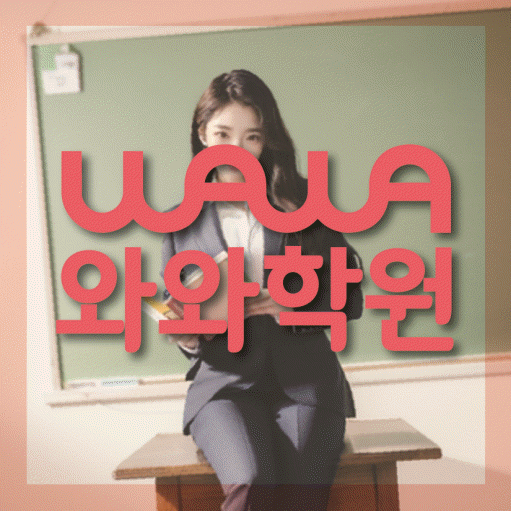

HIGH SCHOOL MATH
용곡동 고등 수학학원
용곡동 고등 수학학원 선택 전 개념 연결·수학 시간 배분 진단, 고등학교 자료, 가능 학년과 센터 위치를 확인하세요. 실제 교재로 상담할 질문도 정리했습니다.
01 Quick answer
용곡동 고등 수학 학습에서 먼저 확인할 핵심 답변
용곡동에서 고등 수학학원을 찾는다면 현재 점수만 보지 말고 개념 연결이 드러난 자료와 수학 시간 배분 재확인 과정을 나누어 살펴보세요. 상담에서는 최근 시험지·시험 범위표·현재 교재에 표시된 어려운 부분을 바탕으로 첫 학습 행동과 재확인 기준을 정하는 것이 좋습니다.
확인 기준
용곡동 고등학생 상담에서는 개념 연결·수학 시간 배분의 현재 상태를 실제 자료에서 나누어 확인합니다.


 010-6839-8283
010-6839-8283학습 답변 요약
용곡동 고등 수학 학습 자료를 기준으로 진단, 학습 순서, 학교·센터 사실과 상담 질문을 차례로 살펴봅니다.
용곡동 고등 수학학원 진단은 어디서 시작할까
용곡동 고등 수학학원의 첫 진단에서는 개념 연결과 수학 시간 배분을 한 가지 문제로 묶지 않습니다. 정의와 공식을 말로 설명한 뒤 문제에 적용하는지와 어느 유형과 계산 단계에서 시간이 길어지는지를 각각 확인해야 보완 순서가 선명해집니다.
최근 시험지·시험 범위표·현재 교재에서 어려운 부분을 한두 곳만 골라도 충분합니다. 상담에서는 개념 연결 관련 안내와 수학 오답 재학습을 점검할 연습량을 구분해 질문하세요. 이 질문은 용곡동에서 고등 수학 계획을 정하기 전에 학생과 함께 살펴봅니다.
용곡동 고등학생의 수학 학습 과정을 확인하는 순서
용곡동 고등 수학학원 상담에서 한 번에 많은 과제를 약속할 필요는 없습니다. 개념 연결과 수학 시간 배분 중 먼저 바꿀 행동 하나를 고르고 다음 점검일에 실제 기록을 확인하면 됩니다.
교재를 바꾸기 전에는 현재 자료에서 틀린 이유를 개념·조건·계산으로 나누어 기록하는지를 먼저 확인하세요. 자료가 어려운 것인지 학습 절차가 빠진 것인지 구분한 뒤 교재와 분량을 결정해야 합니다. 현재 자료를 비교하는 용곡동 고등 수학 과정에서도 이 항목을 별도로 확인합니다.
용곡동 고등 수학학원 추천 학생을 판단하는 실제 기준
용곡동 고등 수학학원의 추천 학생 기준은 성적 구간이 아니라 개념 연결과 수학 시간 배분의 실행 상태입니다. 최근 자료에서 두 항목이 어떻게 나타나는지 확인한 뒤 판단하세요.
과제량이 많은 수업보다 학생이 ‘오답 원인을 표시하고 다시 볼 날짜 정하기’ 활동을 해 보고 확인받을 수 있는지가 중요합니다. 실제 운영 주기와 보완 방식은 센터에 직접 질문해야 합니다. 이 내용은 용곡동 고등 수학 수업 조건을 비교할 때 확인할 질문으로 사용할 수 있습니다.
용곡동 학생의 실제 진도와 고등 수학학원 계획 비교
용곡동 고등 수학학원 페이지에 표시된 청수고·쌍용고·천안여고는 상담 준비를 위한 참고 정보입니다. 학교명만으로 수업 가능 여부를 판단하지 말고 학생의 최근 시험지·시험 범위표·현재 교재를 센터의 현재 개설 범위와 함께 확인해야 합니다.
교습비 링크가 제공된 경우에도 금액과 과정은 변경될 수 있습니다. 용곡동 상담에서 희망 과목, 학년과 주당 일정을 먼저 말한 뒤 최신 자료를 확인하세요. 용곡동 고등 수학 상담 메모에서는 이 내용과 실제 이용 조건을 나누어 적습니다.
용곡동 고등 수학학원 학습을 진단·연습·재확인으로 나누기
첫 계획에서는 ‘오답 원인을 표시하고 다시 볼 날짜 정하기’ 활동을 수행할 시간을 확보하는 것이 중요합니다. 용곡동 학생의 학교 일정과 통학 시간을 반영해 무리하지 않는 주간 분량을 정해야 합니다.
다음 단계는 첫 계획을 모두 마쳤을 때만 정하지 않습니다. 학생이 어려움을 설명한 시점과 다시 수행한 기록을 보고 보완 순서를 바꿀 수 있습니다. 용곡동 학생의 고등 수학 흐름에 적용할 때는 현재 교재와 실행 기록을 함께 살핍니다.
용곡동 학부모가 고등 수학 상담 메모에 남길 항목
용곡동 고등 수학학원 상담 전에는 학생의 실제 자료, 어려웠던 과정과 가능한 일정을 한 장에 정리하세요. 아래 네 항목을 준비하면 학습 문제와 센터 운영 조건을 섞지 않고 질문할 수 있습니다.
체크리스트의 목적은 한 번에 등록을 결정하는 것이 아니라 비교 기준을 남기는 데 있습니다. 용곡동 고등 수학학원 상담 뒤에는 확인된 사실과 추가 질문을 나누어 적으세요.
- 현재 자료용곡동 고등 수학학원 확인용으로 최근 시험지·시험 범위표·현재 교재에서 개념 연결과 수학 시간 배분이 드러난 부분을 표시합니다.
- 오답 근거용곡동 고등 수학 상담에는 기본 문제와 조건이 달라진 문제의 풀이 근거와 첫 풀이와 다시 푼 풀이에서 달라진 단계를 서로 나누어 가져갑니다.
- 가능 일정용곡동 고등 수학 학습에 필요한 통학 시간, 학교 일정과 가정 복습 시간을 적습니다.
- 센터 확인용곡동 고등 수학학원 등록 전에는 와와학습코칭센터 신방점의 과목·학년·시간표·교습비·보완 방식을 확인합니다.
02 Parent perspective
용곡동 고등 수학 학부모 상담 상황
아래 용곡동 고등 수학 상담 장면은 실제 이용 후기나 특정 학생의 성과가 아닌 준비용 가상 예시입니다. 학습 결과는 학생의 출발점과 실천 정도에 따라 달라질 수 있습니다.
용곡동에서 고등 수학 교재를 바꿔야 할지 고민하는 학부모의 상담 장면입니다. 학부모는 기본 문제와 조건이 달라진 문제의 풀이 근거를 보여 주고 교재 난도와 학습 절차 중 무엇을 먼저 조정할지 확인합니다.
용곡동에서 고등 수학 상담을 마친 학부모가 학생의 학교 일정과 가정 학습 시간을 대조하는 장면입니다. 첫 계획을 그대로 따르기보다 실행하지 못했을 때 분량과 순서를 어떻게 바꿀지 질문합니다.
03 FAQ
용곡동 고등 수학 자주 묻는 질문
학생 자료, 가능 학년과 실제 이용 조건을 나누어 답했습니다.
용곡동 고등 수학 상담에서는 무엇을 먼저 진단하나요?
고등 수학 상담에서 사용할 첫 진단 기준입니다. 최근 점수만 보지 말고 정의와 공식을 말로 설명한 뒤 문제에 적용하는지와 어느 유형과 계산 단계에서 시간이 길어지는지를 먼저 살핍니다. 용곡동 학생의 최근 시험지·시험 범위표·현재 교재를 가져오면 두 항목이 실제 학습에서 어떻게 나타나는지 구분할 수 있습니다.
용곡동의 고등 수학 가능 학년과 실제 수업 일정은 어떻게 확인하나요?
용곡동 고등 수학학원 페이지의 제공 센터 사실을 기준으로 답합니다. 제공 자료상 해당 센터 위치는 충청남도 천안시 동남구 신방동 886 학산프라자 A동 3층 304호,305호입니다. 센터 자료의 과목별 학년 표기는 수학 고1·고2·고3입니다. 교습비 자료는 페이지의 센터별 교습비 확인 버튼에서 볼 수 있습니다. 제공 학년 정보와 별개로 실제 개설 반, 시간표와 보강 방식은 센터 상담에서 다시 확인하는 것이 정확합니다.
용곡동에서 고등 수학 학습을 하는 학생의 과제량은 어떤 기준으로 정하나요?
고등 수학 과제량은 학생이 수행하고 다시 확인할 수 있는지를 기준으로 비교합니다. 많은 분량보다 ‘개념 한 줄과 대표 문제를 한 묶음으로 정리하기’와 ‘풀이와 검산 시간을 나누어 연습하기’ 두 활동을 실제로 마칠 수 있는지를 먼저 봅니다. 완료 기록을 다음 점검에서 확인하고 학교 일정과 가정 학습 시간에 맞춰 분량을 조정하세요. 용곡동 학부모는 고등 수학 질문과 이용 조건을 나누어 기록해 두세요.
청수고·쌍용고·천안여고 자료는 용곡동 고등 수학 계획에 어떻게 반영하나요?
고등 수학 학교 자료 반영 방식은 실제 학생 자료를 기준으로 확인합니다. 학교명 자체보다 학생이 가져온 범위와 현재 교재의 진행 위치를 확인합니다. 개념 연결과 수학 시간 배분이 드러난 부분을 표시해 주간 과제와 복습 순서에 반영되는지 질문하세요. 용곡동 고등 수학 학습에서는 실제 자료를 확인한 뒤 판단해야 합니다.
용곡동 고등 수학 첫 상담 전에 학부모가 정리할 질문은 무엇인가요?
고등 수학 첫 상담 질문은 학습 자료와 이용 조건을 나누어 준비합니다. 학생이 막힌 과정, 실제 가능한 학습 시간과 센터 운영 조건을 구분해 적으세요. 이 상담에서는 첫 점검일, 가정에서 확인할 기록과 시간표·교습비 확인 방법을 차례로 질문하면 됩니다. 와와학습코칭센터 신방점의 용곡동 고등 수학 운영 여부는 상담 시점에 다시 확인합니다.
04 Related
용곡동 관련 학원·상담 페이지
같은 지역의 과목 조합과 학년 카테고리, 앞뒤 지역 안내를 함께 확인하세요.